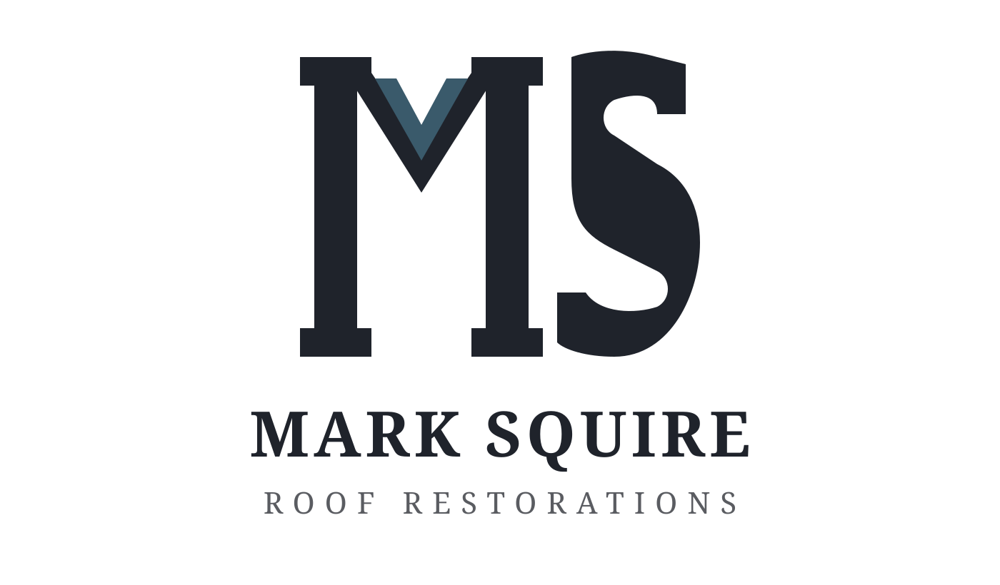
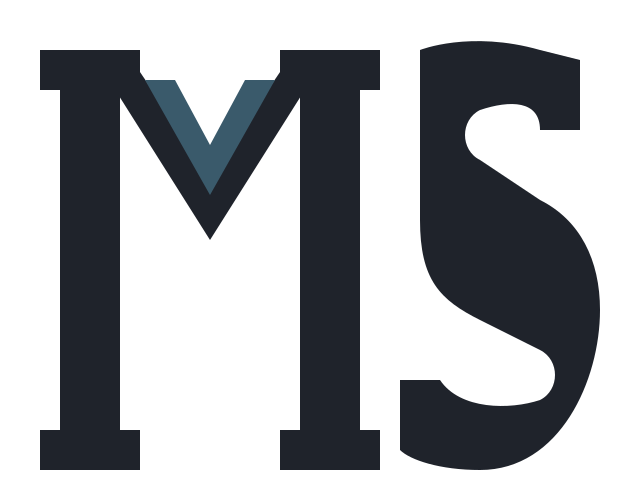
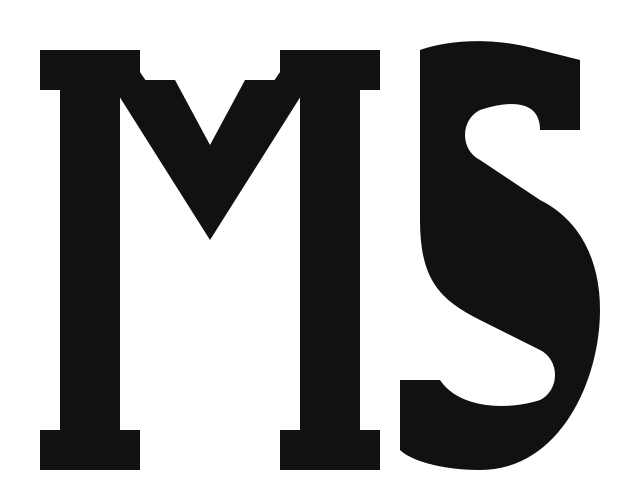
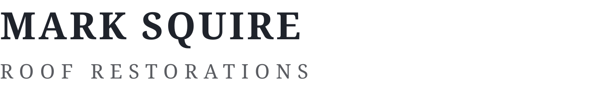
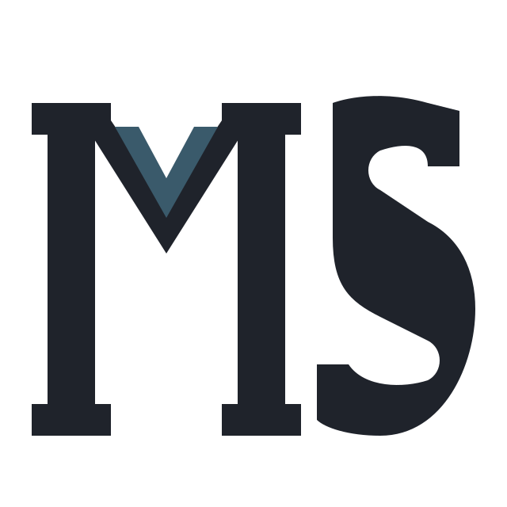
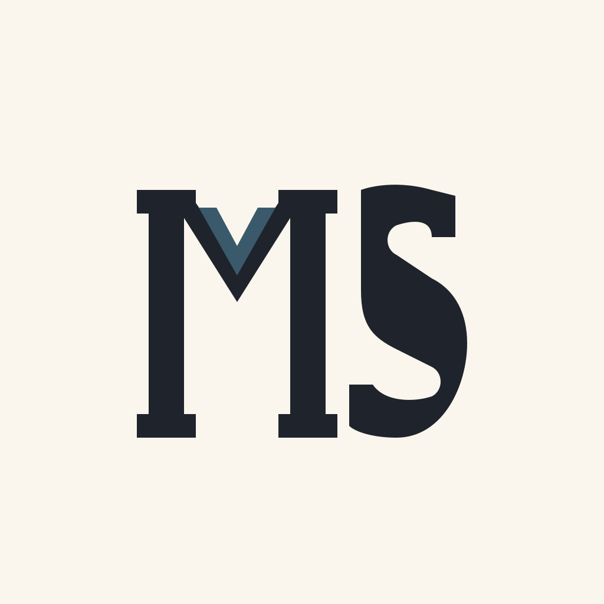

64×64
social (circle)#1F232B · deep charcoal#3A5A6B · steel-blue ridge cap#C68C3F · regional ochre#FAF6EE · warm cream#FFFFFF| File | Purpose |
|---|---|
| brand-spec.json | source-of-truth structured brand spec |
| brand-assets.md | full brand summary + logo strategy + colors + typography |
| brand-tokens.css | CSS custom-property tokens |
| visual-style-contract.md | design direction + guardrails |
| agent-handoff.md | read-order + freedoms + non-negotiables for downstream agents |
| logo-review.md | autonomous design loop: 3 directions, rejected ones, rubric scores |
| logo-qa-checklist.md | final QA gate |
| logo-{light,dark,mark,wordmark,mono-dark,mono-light}.svg | logo variant set |
| favicon.svg / social-avatar.svg | compact + social assets |